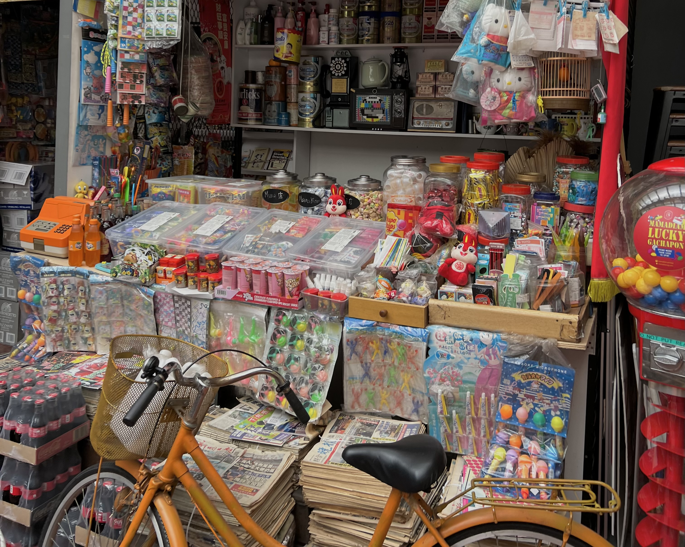

OUR PURPOSE
My exhibition aims to preserve Singapore's rich heritage of play, evoking nostalgia while educating visitors about the shifts in society reflected in our toys. By curating a diverse collection of toys from different eras, my exhibition seeks to evoke a sense of nostalgia in older visitors while educating younger generations about the profound shifts in Singaporean society as reflected through these playthings.
OUR LOGO

The Dragon Playground, with its timeless appeal and historical roots, embodies the evolution of play in Singapore's cultural landscape, making it an ideal emblem for my narrative. This not only pays homage to a beloved icon but also underscores my exhibition's commitment to preserving and celebrating the diverse history of play in Singapore.
OUR MAP DOODLES

Images used for the map were all done by me, and were chosen to be drawn in a childlike style to invoke memories of childhood play for Singaporeans of all ages. The map itself was also hand-drawn. Hand-drawn elements evoke a sense of nostalgia and adds a unique, personal feel to my webpage. I hope to incorporate playful icons and elements that tell a story, guiding users through the content in an engaging, visual way.
OUR FONTS
Nunito is a well-balanced sans-serif font with rounded terminals, making it highly readable across various screen sizes and resolutions. Its rounded edges give it a soft, approachable feel, which felt appropriate for my website. On the other hand, Oliver was chosen as it reminded me of a child's innocent scribbles on a page, overall contributing to the theme of my webpage.